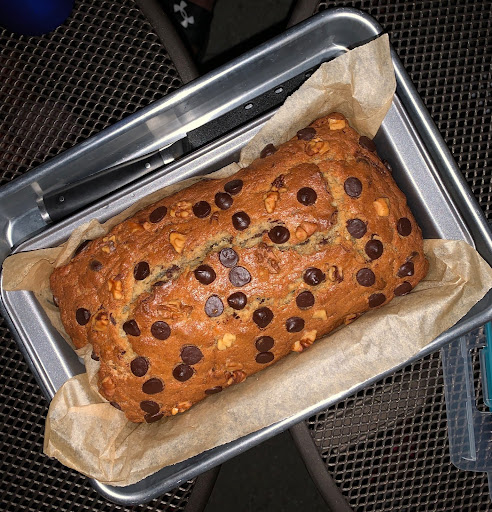
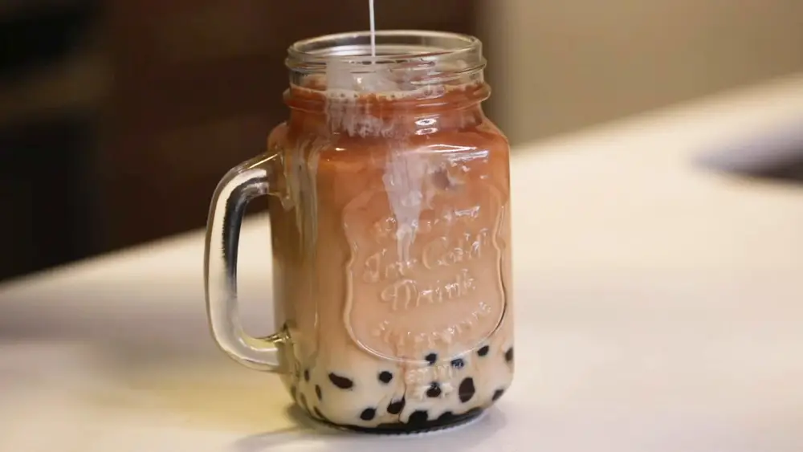
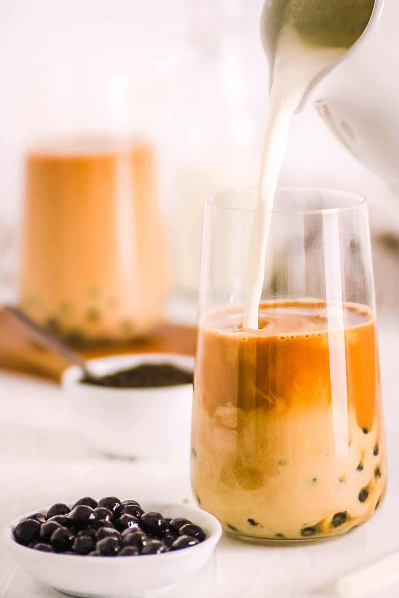
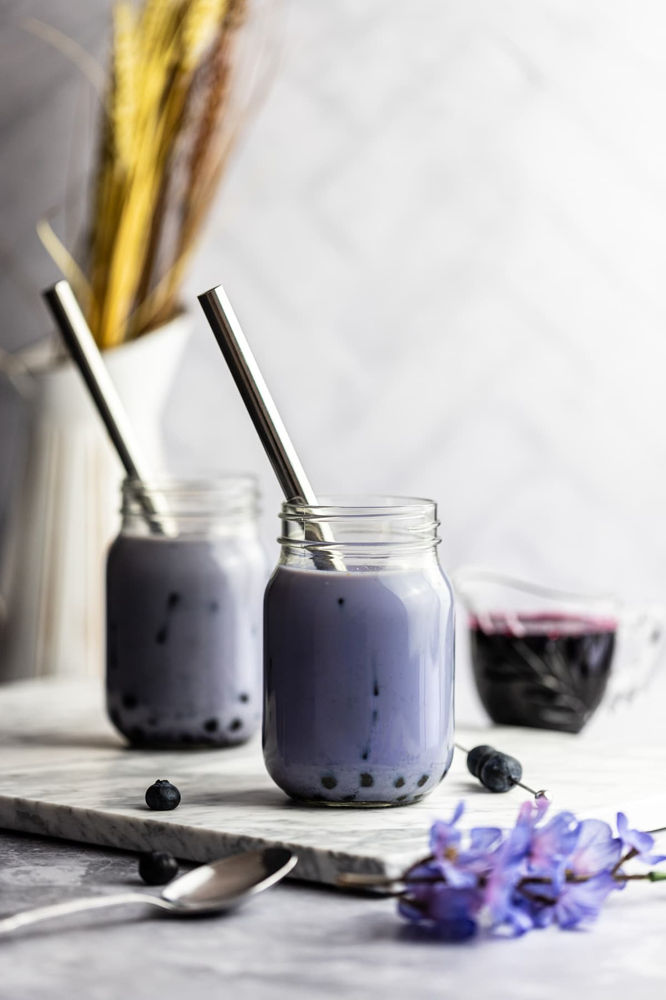
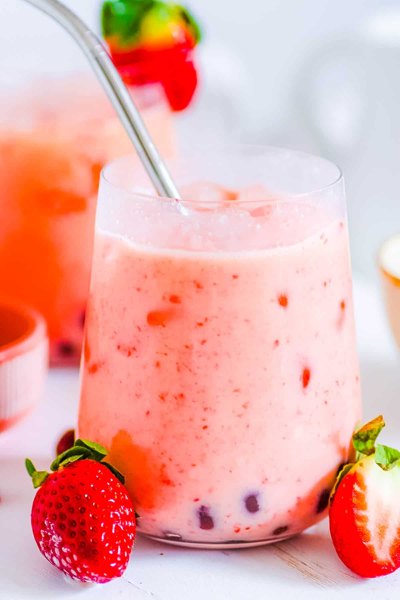
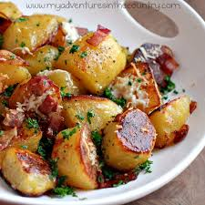
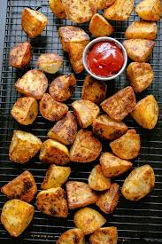
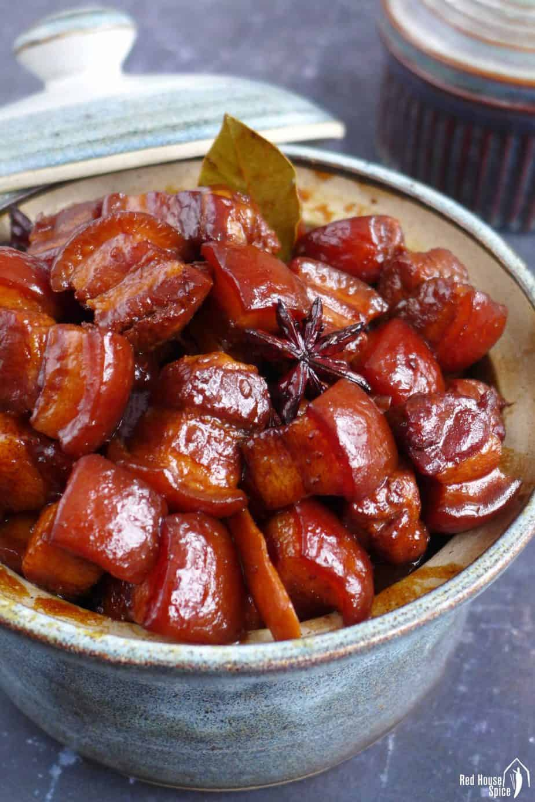
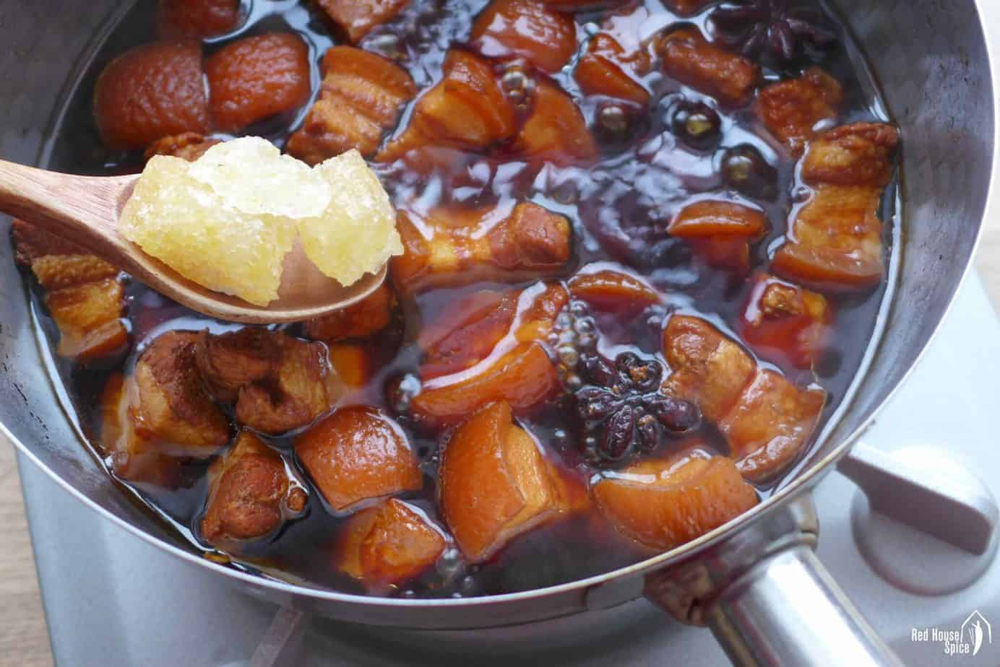
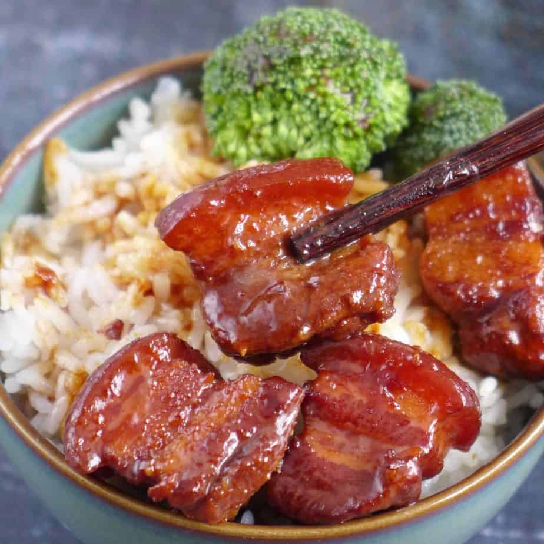

Recipe
Double Chocolate Cookies
Origin: Michigan
Source: Family Recipe
Category: Dessert

double_chocolate_cookies.png
My daughter learned to make these cookies at a baking camp at Zingermanns and has tweaked the recipe to fit the taste buds of her siblings. They are extremely sugary so the salt helps to balance it. Note, these cookies are best eaten very quickly.
Recipe Ingredients
- Unsalted butter
- Granulated Sugar
- Packed light or dark brown sugar
- Large egg
- Pure vanilla extract
- Semi-sweet chocolate chunks (melted)
- All-purpose flour
- Natural unsweetened cocoa powder
- Baking soda
- Salt
- Semi-sweet chocolate chunks
Recipe Steps
- In a mixing bowl cream together the butter, granulated sugar, and brown sugar
- Add the egg and vanilla extract and beat well
- Add the melted chocolate
- In a separate bowl combine the flour, baking soda, cocoa powder and salt
- Combine the wet and dry ingredients
- Add the unmelted chocolate chunks.
- Form 15 cookies and place on a baking sheet.
- Cook for 12 to 13 minutes at 350 degrees.
Additional Food Images

A small pile of chocolate chips

Chocolate melting in a boiler

Brown sugar in three different shades of darkness
Recipe by Colleen van Lent
Chocolate Chip Banana Bread
Origin: American
Source: delishCategory: Dessert
chocolate_chip_banana_bread.jpeg
This is a tried-and-tested recipe that I have used numerous times for making the perfect chocolate chip banana bread! Not only does it help utilize the bananas that have slowly overripened at the back of the fridge, it ends up creating an incredibly delicious, and relatively healthy, dessert.
Recipe Ingredients
- Cooking spray
- 2 cups (240 g) all-purpose flour
- 1 tsp. baking soda
- 1/2 tsp. kosher salt
- 1 large egg plus 1 egg yolk
- 1 cup (200 g) granulated sugar
- 1/2 cup (1 stick) unsalted butter, melted
- 1/4 cup sour cream
- 1 tsp. pure vanilla extract /li>
- 3 ripe bananas, mashed
- 1/2 cup chopped toasted walnuts
- 1/2 cup semisweet chocolate chips
Recipe Steps
- Preheat the oven to 350º. Line a 9"-by-5" loaf pan with parchment and grease with cooking spray.
- In a medium bowl, whisk flour, baking soda, and salt.
- In a large bowl, mix egg, egg yolk, granulated sugar, butter, sour cream, and vanilla. Add bananas and stir until combined. Gradually add dry ingredients to banana mixture until just combined.
- In a separate bowl combine the flour, baking soda, cocoa powder and salt
- Fold in walnuts and chocolate chips and transfer to prepared pan.
- Bake bread until a tester inserted into the center comes out clean, about 1 hour. Let cool 10 minutes in pan, then invert onto a wire rack and let cool completely.
Additional Food Images

A close-up image of a chocolate chip banana bread slice with 2 other slices in the background.

Four slices of chocolate chip banana bread, topped with walnuts, resting on a wire rac

A top-down image of a sliced loaf of chocolate chip banana bread
Recipe by Ibrahim Moazzam & Memuna Tariq
Boba Milk Tea
Origin: Taiwan
Source: tasty.coCategory: Drink
Boba Milk Tea
This classic milk tea was inspired by my experiences walking around Taiwan. Every cup of milk tea had this signature condensed milk flavor that fused perfectly with the concentrated black tea.
Recipe Ingredients
- ⅓ cup water, plus more as needed
- ¼ cup dark muscovado sugar, or brown sugar
- ¾ cup tapioca flour, plus more for dusting
- 3 tablespoons half & half
- 6 black tea bags
- 3 tablespoons sweetened condensed milk
- 3 cups ice, divided
Recipe Steps
- Add the water and muscovado sugar to a medium pan over medium-high heat.Cook until the sugar dissolves and the mixture comes to a boil, 3–4 minutes.
- Add a bit of the tapioca flour and cook, stirring constantly, until smooth. Add half of the remaining tapioca flour and stir vigorously until a sticky dough forms.
- Turn off the heat and add the remaining tapioca flour. Stir until the dough comes together in a ball (not all of the flour will be incorporated at this stage). Let cool slightly.
- Turn the dough out onto a clean surface. Knead until all of the flour is incorporated and the dough is smooth, adding more flour or water as needed if the dough is too sticky or too dry.
- Roll the dough into long, thin ropes about ¼-inch (6.35 mm) thick, cutting in half crosswise if they get too long. Cut the ropes into ¼-inch (6.35 mm) pieces. Roll each piece into a ball and place in a bowl with a bit of tapioca flour. Dust the balls with the flour to prevent them from sticking to each other.
- Shake off any excess flour from the tapioca pearls, then add to the boiling water. Stir to separate the pearls, then reduce the heat to medium-low. Simmer gently, stirring occasionally, for about 20 minutes, until cooked through.
- Add the muscovado sugar and water to a small saucepan over medium heat. Cook until the sugar dissolves and the syrup reduces slightly, 5–7 minutes. Pour the syrup into a large heatproof bowl.
- Add the pearls to the bowl with the brown sugar syrup and let sit for 30–60 minutes./li>
- In a medium pot over high heat, combine the water and tea bags. Bring to a boil, then remove the pan from the heat and let the tea cool to room temperature.
- In a small bowl or liquid measuring cup, whisk together the half-and-half and sweetened condensed milk until combined.
- Add about ⅓ cup (80 ml) boba pearls and brown sugar syrup to the bottom of each glass. Top with 1½ cups (225 grams) ice, then add ½ cup (240 ml) black tea and 3 tablespoons of the milk mixture. Stir with a wide-opening straw, then serve.
Additional Food Images
Add milk to the tea
Blueberry Milk Tea
Strawberry Milk Tea
Recipe by Jasmine Pak
Easy Oven Roasted Potatoes
Origin:South America
Source: spendwithpennies
Category:Appetizer

These oven roasted potatoes are amazing! Perfectly golden brown and crispy on the outside, tender on the inside - this is the best roasted potatoes recipe ever!
Ingredients
- 2 pounds red or yellow skinned potatoes
- 2 tablespoons olive oil
- 1 teaspoon garlic powder
- 3 tablespoons fresh herbs chopped (rosemary, parsley, thyme, basil)
- ½ teaspoon paprika
Recipe Steps
- Wash potatoes and cut into 1″ cubes.
- Soak in cold water about 15-20 minutes (optional).
- Preheat the oven to a very hot temperature.
- Add olive oil, seasonings, and herbs (per recipe below) and roast until tender.
Additional Food Images
Oven Roasted Potatoes
Oven Roasted Potatoes with ketchup
Recipe by Holly
Red braised pork belly
Origin: Hunan
Source: redhousespice
Category: Main Course
A popular cut of meat, pork belly is treasured by many great cuisines around the world. Containing a high percentage of fat, it needs to be cooked in a particular way to reduce its greasy taste.
Ingredients
- Pork Belly
- Shaoxing Rice Wine
- Soy Sauce
- Aromatic & Spices
- Rock Sugar
Recipe Steps
- Put the pork belly cubes into a pot filled with cold water then turn on the heat to high.
- After blanching, put the pork into a clean pot then pour in Shaoxing rice wine and hot water (barely cover the meat). Add light soy sauce, dark soy sauce, ginger, star anise and bay leaves.
- Turn on the heat to bring the liquid to a full boil. Cover with a lid and turn down the heat. Leave to simmer for at least one hour. Poke one piece of meat with a chopstick to check the tenderness.
- Add rock sugar (or regular white sugar) to the braising liquid and leave to boil fiercely. As the sugar melts and the water evaporates, the broth will dramatically reduce its volume and become thicker.
Additional Food Images
Oven Roasted Potatoes
Eat Red braised pork belly with chopsticks
Recipe by Holly